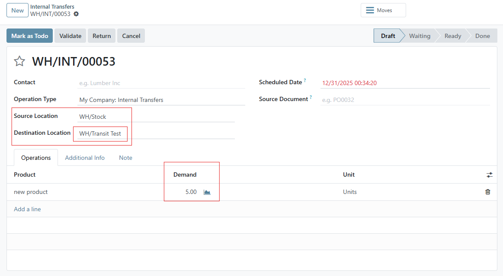
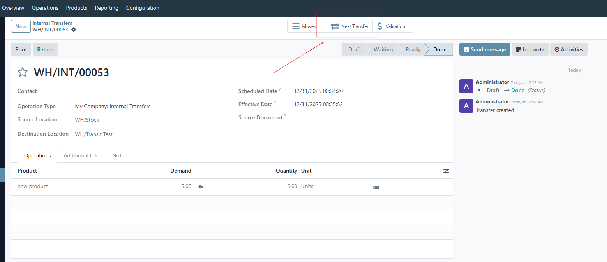
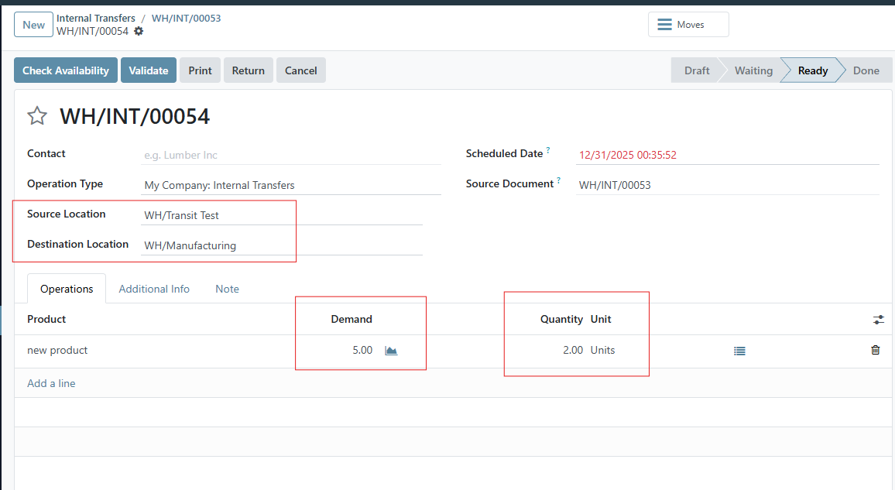
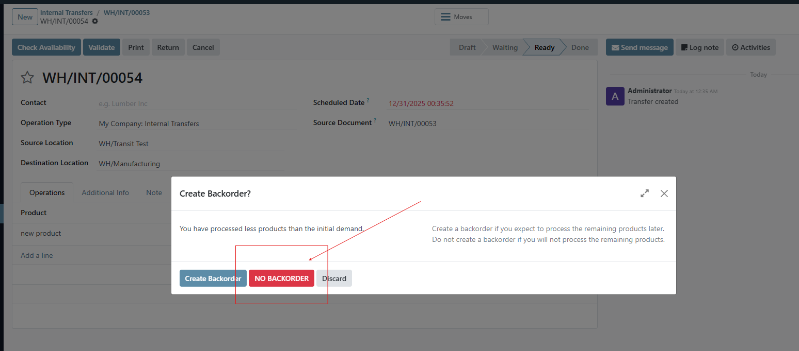
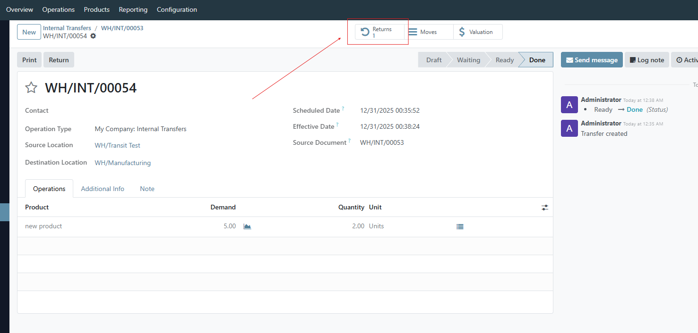
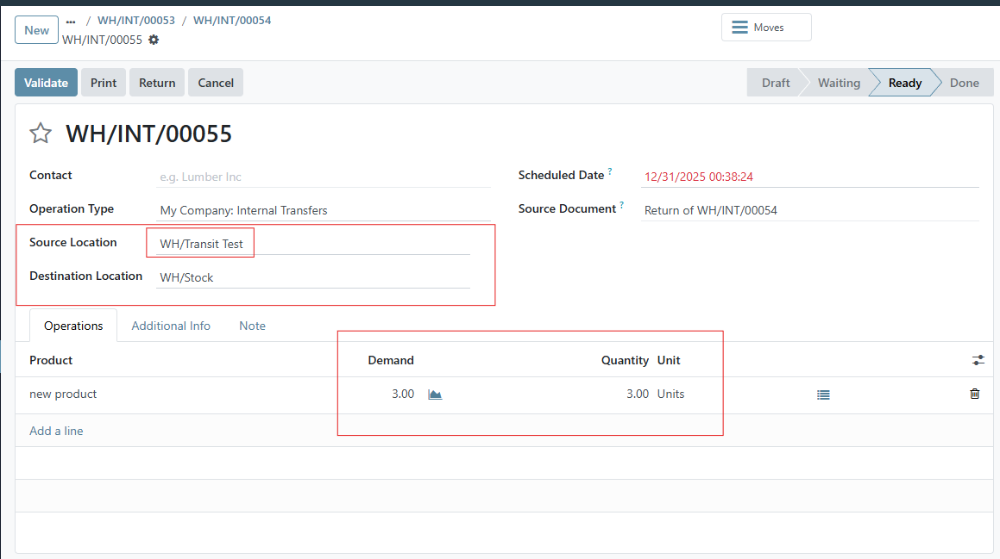

Key Features
- Automatic return from Transit Location
- Triggered when No Backorder is selected
- Return picking created in Draft state
- Original source location is preserved
- Compatible with Odoo 18
Screenshots





